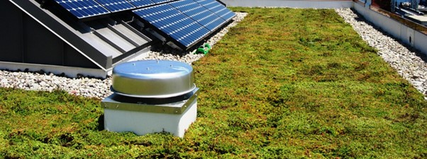
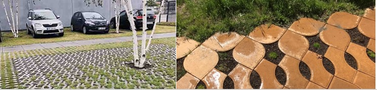
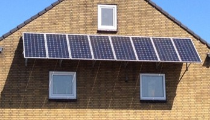

Deze daken helpen om water op te nemen en door de extra laag isolatie heeft het ook een extra functie; het buiten houden van kou en het houd warmte binnen. Het dak is niet alleen praktisch, maar het geeft ook een milieu vriendelijke uitstraling.
Klimaat adaptieve tegels hebben gaten tussen de tegels zodat regen wordt opgevangen en niet op de tegels blijft liggen. Deze water afvoerende tegels geleiden het water naar een water tank waar het dan weer hergebruikt kan worden.
De zonnepanelen moeten zo veel mogelijk naar het zuiden gericht zijn en ze kunnen gebruikt worden als zonnewering/zonneschermen. Ook zouden ze met de zon kunnen meedraaien.
Deze watertanks worden onder de grond gebouwd zodat al het water dat door de tegels wordt afgevoerd wordt opgeslagen. Dit is zodat het later hergebruikt kan worden. De tanks zitten onder de tegels zodat er geen complexe afvoeringssysteem gemaakt hoeft te worden.